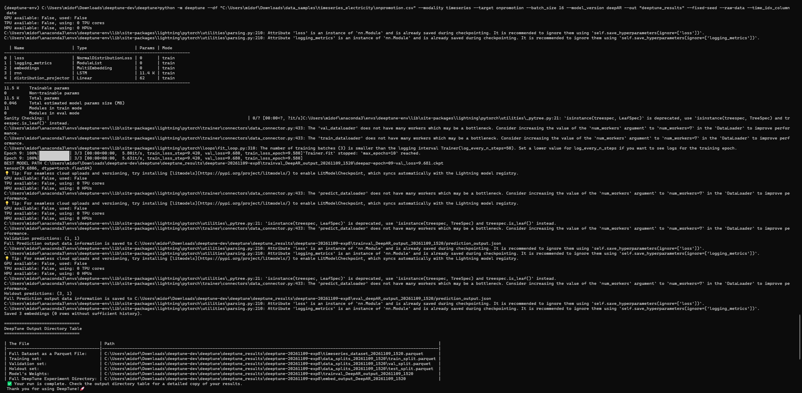

Time Series Forecasting
Time series forecasting is a critical task in machine learning, where the objective is to predict future values based on historical data. DeepTune offers a robust framework for training, evaluating, and extracting knowledge from models designed for time series forecasting, supporting a variety of state-of-the-art architectures and training paradigms.
Running Time Series Forecasting Tasks through DeepTune
deepAR (Deep Autoregressive Recurrent Neural Network). The only supported version is ‘deepar’.
Note
The deepAR model in DeepTune is yet to be heavily tested and validated, especially on the effectiveness of the embeddings extraction feature. Users are encouraged to report any issues or provide feedback to help improve the implementation.
For the time-series task using deepAR, the following command can be used to run the experiment through the CLI:
# --time_idx_column <time_index_column_name> is only required with time series forecasting tasks
(.deeptune) $ python -m deeptune \
--modality timeseries \
--model_version deepAR \
--df <dataset_path> \
--target <target_column_name> \
--time_idx_column <time_index_column_name> \
--fixed-seed


For a detailed information on the configuration parameters and execution options for tabular classification and regression tasks, please refer to the Time Series Forecasting Parameters Reference section.